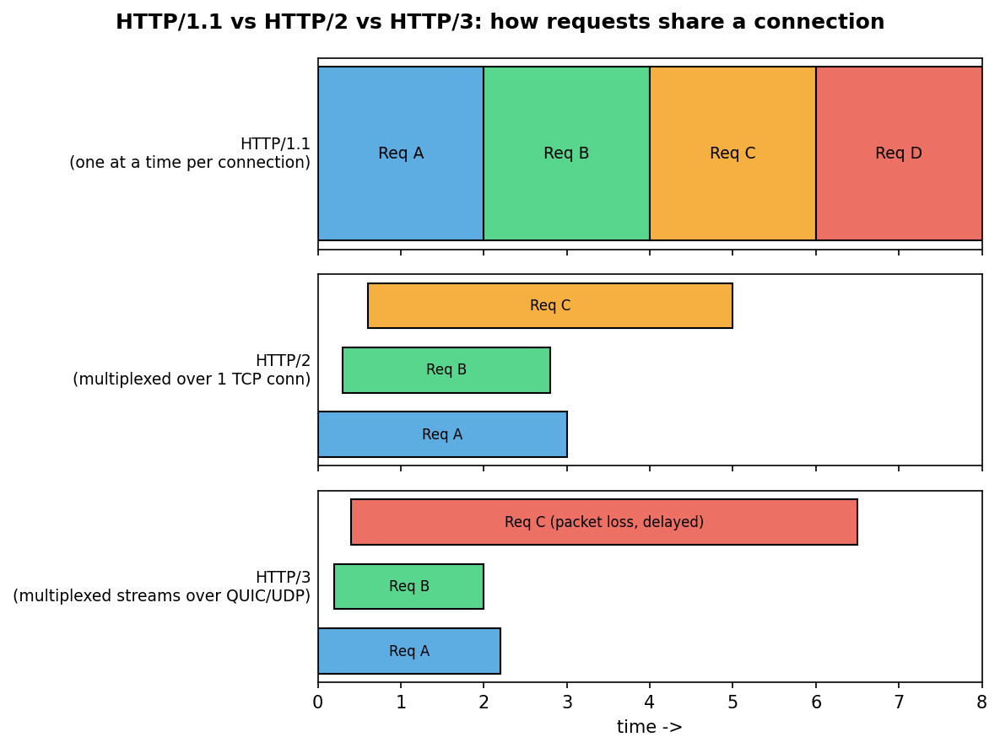
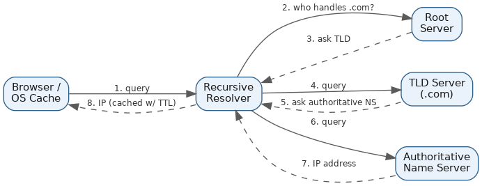
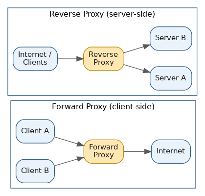

Networking, DNS & Proxies
Table of Contents
Overview
Every request in a distributed system ultimately travels across a network, and a handful of foundational networking concepts show up constantly in system design interviews: which protocol carries the data, which version of HTTP is doing the talking, how a human-friendly name turns into a machine-usable IP address, and which intermediary servers sit along the way. This page works through those building blocks in the order they naturally build on each other — starting with the protocols underneath the web (HTTP vs. HTTPS, TCP vs. UDP, the evolution of HTTP itself, and the URL/URI/URN naming distinction), then moving to DNS (how names get resolved, and how DNS itself doubles as a load-balancing and high-availability tool), and finally proxies (what a proxy server actually does, and how it compares to a VPN).
HTTP vs. HTTPS
HTTP (HyperText Transfer Protocol) is the language browsers and servers use to talk to each other — type an address into a browser, and it sends an HTTP request that comes back as an HTTP response carrying the page, image, or data you asked for. It's been the backbone of the web since the early 1990s, but plain HTTP has a serious flaw: everything it sends, including passwords, card numbers, and session tokens, travels as plain, readable text. Anyone on the same network — coffee-shop Wi-Fi, an ISP, or a malicious actor — can potentially read or tamper with that traffic in transit.
HTTPS (HTTP Secure) fixes this by wrapping ordinary HTTP inside TLS (Transport Layer Security, the successor to SSL). Before any data moves, the browser and server perform a "TLS handshake": the server presents a certificate issued by a trusted certificate authority (like DigiCert or Let's Encrypt) to prove its identity, the two sides agree on a shared secret key, and everything from that point on is encrypted. That buys three guarantees at once — confidentiality (no one in the middle can read the data), integrity (no one can quietly tamper with it), and authentication (you can be reasonably confident you're actually talking to the real server). HTTPS used to carry a meaningful performance penalty for the extra handshake, but with TLS 1.3 and session resumption the difference is negligible today, which is why virtually every serious website — banking, e-commerce, social media, even blogs — defaults to HTTPS, and search engines actively favor it in rankings.
| Aspect | HTTP | HTTPS |
|---|---|---|
| Port | 80 | 443 |
| Data sent | Plain text | Encrypted (via TLS) |
| Certificate required | No | Yes |
| Data integrity | Not guaranteed | Guaranteed |
| Server identity verified | No | Yes |
| Typical use today | Legacy/internal only | Standard for all public sites |
TCP vs. UDP
TCP and UDP are the two main transport-layer protocols that actually move data across a network — if HTTP defines what a message looks like, TCP or UDP defines how it physically gets from one machine to another. TCP (Transmission Control Protocol) is connection-oriented: before any real data flows, both sides perform a three-way handshake (SYN, SYN-ACK, ACK) to establish a reliable connection. Once connected, TCP guarantees every byte arrives, arrives in order, and automatically retransmits anything lost, while also managing congestion so it slows down if the network gets overwhelmed. That reliability makes it the natural choice whenever correctness matters more than raw speed — web pages, email, file transfers, financial transactions.
UDP (User Datagram Protocol) is connectionless — there's no handshake and no guarantee; the sender just fires off datagrams and moves on, with nothing checking whether they arrived and no automatic retransmission. That sounds worse, but it's exactly what you want when speed and low latency matter more than perfect accuracy: if a UDP packet carrying a fraction of a second of a video call goes missing, it's better to just skip it than to pause everything waiting for a retransmit. That's why UDP (or protocols built on it) powers live video streaming, VoIP calls, online gaming, and DNS lookups. Notably, HTTP/3 is actually built on top of UDP via a protocol called QUIC, specifically to avoid some of TCP's head-of-line blocking downsides — so the old rule of thumb "TCP for reliability, UDP for real-time" still broadly holds, even as modern engineering finds ways to layer reliability on top of UDP when both speed and correctness are needed.
| Aspect | TCP | UDP |
|---|---|---|
| Connection | Connection-oriented (handshake required) | Connectionless |
| Reliability | Guaranteed delivery, in order | No guarantee, no ordering |
| Speed | Slower (overhead from handshake, acks, retransmits) | Faster, lower latency |
| Error/congestion control | Built in | None (left to the application) |
| Typical use cases | Web browsing, email, file transfer, banking | Video/audio streaming, VoIP, gaming, DNS |
HTTP/1.0 vs. 1.1 vs. 2.0 vs. 3.0
HTTP has evolved considerably since it first appeared. HTTP/1.0, standardized in 1996, was very basic: every single resource on a page — the HTML, then each image, then each stylesheet — required opening a brand-new TCP connection, using it once, and closing it, which was wasteful given how much overhead a fresh connection carries and how many resources a typical page needs. HTTP/1.1, released in 1997 and still widely used, introduced persistent connections so a single TCP connection could be reused across multiple requests, added pipelining (sending several requests without waiting for each response, though rarely enabled in practice due to its own issues), and better caching headers. Its major remaining weakness was head-of-line blocking: even on a persistent connection, requests were still processed strictly one at a time, so one slow response delayed everything behind it — browsers worked around this by opening several parallel connections per domain (commonly six), which helped but added overhead of its own.
HTTP/2, standardized in 2015, made a much bigger leap: multiplexing let many requests and responses interleave over a single TCP connection simultaneously, so a slow image no longer blocked an unrelated stylesheet. It moved from a human-readable text format to a compact binary one, added header compression (HPACK), and added server push. But because HTTP/2 still rides on top of TCP, it still suffers a form of head-of-line blocking at the TCP layer — if a single packet is lost, TCP pauses delivery of everything else on that connection until it's resent, even if the lost data belonged to just one of many multiplexed streams. HTTP/3, finalized around 2020 and still gaining adoption (2026 industry measurements put it around a third of web traffic, highest among high-traffic sites and mobile-heavy markets, with HTTP/2 remaining the single most common version overall), solves this by abandoning TCP entirely in favor of QUIC, a transport built on UDP. QUIC handles reliability, ordering, and congestion control per-stream, so a lost packet only stalls the one stream it belongs to. It also bundles in TLS 1.3 encryption by default, supports much faster connection setup (including "0-RTT," where a returning visitor's browser can start sending data before the handshake even finishes), and supports connection migration, so a call or download doesn't drop when a phone switches from Wi-Fi to mobile data, since the connection is identified by a token rather than a network path. Google, Facebook, and Cloudflare-fronted sites are among the real-world adopters, and Chrome, Firefox, and Safari all support it.
| Version | Year | Connections | Key improvement | Transport |
|---|---|---|---|---|
| HTTP/1.0 | 1996 | New connection per request | Basic request/response | TCP |
| HTTP/1.1 | 1997 | Persistent connections | Reuse connections, keep-alive | TCP |
| HTTP/2 | 2015 | Multiplexed streams | Binary format, header compression, multiplexing | TCP |
| HTTP/3 | 2020 | Multiplexed streams, no TCP HOL blocking | Built on QUIC/UDP, faster handshakes, connection migration | UDP (QUIC) |

URL vs. URI vs. URN
These three terms get used interchangeably in casual conversation, but they mean subtly different things. The umbrella term is URI (Uniform Resource Identifier) — any string of characters that identifies a resource, where "resource" could be a web page, an image, an email address, or an abstract concept. Both URLs and URNs are specific kinds of URIs: every URL and every URN is a URI, but not every URI is a URL or a URN. A URL (Uniform Resource Locator) is a URI that tells you both what a resource is and where to find it — a scheme like https://, a host, and often a path — so you know exactly how to retrieve it over a network; https://www.example.com/products/123 is a URL because it locates a specific resource on a specific server. A URN (Uniform Resource Name) names a resource in a way meant to be globally unique and persistent, without saying anything about where to find it — urn:isbn:9780132350884 identifies a specific book regardless of which library, bookstore, or website you get it from. URNs show up far less often in everyday web development than URLs, but matter in digital publishing, library science, and certain document standards where a stable identity matters more than a network location.
The easiest way to remember it: a URI identifies something, a URL locates it, and a URN names it permanently without telling you where it lives. In everyday system design conversations, "URL" almost always means the address typed into a browser, and the URI/URN distinction mostly surfaces in more academic or standards-focused discussions.
| Term | Full name | What it does | Example |
|---|---|---|---|
| URI | Uniform Resource Identifier | Identifies a resource (umbrella term) | Either example to the right |
| URL | Uniform Resource Locator | Identifies AND locates a resource | https://example.com/page |
| URN | Uniform Resource Name | Names a resource persistently, no location info | urn:isbn:9780132350884 |
Introduction to DNS
DNS (Domain Name System) is often called the "phone book of the internet," and that's a genuinely useful way to think about it. Computers find each other using numerical IP addresses, but humans remember names like www.google.com far more easily than strings of numbers — DNS is the system that translates human-friendly domain names into the IP addresses computers actually need to route traffic. Rather than one giant central list, DNS is organized as a massive, distributed, hierarchical database: root servers sit at the very top, Top-Level Domain (TLD) servers below them handle endings like .com, .org, or .io, and authoritative name servers below those handle individual domains like example.com. This hierarchy is what lets DNS scale to the entire internet without becoming a single point of failure, and it's a common first example in system design courses on distributed systems generally.
Companies rely on real-world DNS providers such as Amazon Route 53, Cloudflare DNS, Google Cloud DNS, and NS1. Beyond translating names to addresses, DNS records carry other information too — an MX record says where to deliver email for a domain, a TXT record can hold verification or security data (like SPF/DKIM records that help prevent email spoofing), and a CNAME record lets one domain point to another. Because DNS sits in the critical path of almost every internet interaction — you can't load a site, send an email, or make an API call without resolving a name first — it's also an attractive target for attacks, which is part of why DNSSEC (cryptographically signing DNS responses) and highly resilient, geographically distributed DNS infrastructure matter so much.
DNS Resolution Process
Typing a web address triggers a fairly elaborate chain of lookups in a matter of milliseconds, known as DNS resolution. It starts close to home: the browser checks its own cache, then the OS checks its local cache and host file, to see if the answer is already known from a recent lookup. If not, the query goes to a recursive resolver — often run by an ISP or a public service such as Google's 8.8.8.8 or Cloudflare's 1.1.1.1 — whose job is to do all the legwork and come back with a final answer, rather than making the client bounce around the hierarchy itself.
If the recursive resolver doesn't have a cached answer, it walks down the hierarchy from the top. First it asks one of the 13 logical root name server clusters, which don't know the final IP but do know which TLD servers handle endings like .com or .org, and points the resolver there. Next, the resolver asks the relevant TLD server (the .com server, for example.com), which again doesn't know the final address but knows which authoritative name server owns that domain, and points there. Finally, the resolver queries that authoritative name server, which actually holds the real DNS records and returns the correct IP address. The recursive resolver then hands the answer back to the browser (which can now open a connection) and caches it for the period defined by the record's TTL (Time To Live), so the next request for the same domain — from anyone served by that resolver — can be answered instantly without repeating the whole hierarchy walk. This layered caching (browser, OS, resolver) is why DNS resolution, despite potentially involving four or five separate lookups, usually completes in well under 100 milliseconds and is invisible to the end user.

DNS Load Balancing and High Availability
DNS isn't just used to point a name at one fixed server — it can also act as a load-balancing and traffic-routing tool in its own right, which matters enormously for large-scale applications spread across many servers or data centers. One simple technique is round-robin DNS, where a single domain is configured with multiple IP addresses and the DNS server rotates through them on each query, spreading traffic roughly evenly without a dedicated load balancer. More advanced setups use Global Server Load Balancing (GSLB), where DNS makes smarter decisions based on the user's geographic location, current server health, and real-time load rather than blindly rotating a fixed list — Amazon Route 53, for example, offers latency-based routing (send the user to whichever region responds fastest), geolocation routing (route by country/region), weighted routing (split traffic by percentage for gradual rollouts), and failover routing (redirect traffic away from an unhealthy endpoint automatically).
A related but distinct technique is anycast, where the same IP address is announced from many different physical locations, and the internet's own routing infrastructure (BGP) automatically sends each user's request to whichever location is "closest" in network terms — public resolvers like Cloudflare's 1.1.1.1 and Google's 8.8.8.8 use anycast so queries are answered by a nearby server no matter where you are. Anycast is frequently paired with GSLB and DNS-based routing inside CDN architectures because it provides much faster failover — often within milliseconds, since it's handled by network routing rather than waiting for DNS caches to expire — compared to relying purely on DNS TTL-based failover, which can take seconds to minutes depending on how aggressively TTLs are set. For high availability, most serious production systems run multiple, geographically separate DNS servers (often across multiple independent providers) so a single provider outage can't take down name resolution for the whole application, combined with health checks that continuously verify backend servers are actually up before DNS keeps sending traffic their way.
What Is a Proxy Server?
A proxy server is an intermediary that sits between a client and the destination server it wants to talk to, forwarding requests and responses on the client's behalf — instead of your device talking directly to a website, the request goes to the proxy first, the proxy contacts the actual destination, and relays the response back. Because of this, the destination often sees the proxy's IP address rather than the client's.
There are two fundamentally different kinds of proxy, and the distinction is one of the most commonly tested proxy concepts in interviews. A forward proxy sits on the client's side of the connection, representing a group of clients (say, every computer in an office) to the wider internet; the client is explicitly configured to route its traffic through it, and the destination server typically has no idea a proxy was involved — it just sees the proxy's IP. Squid is a classic, widely used open-source forward (and caching) proxy. A reverse proxy, by contrast, sits on the server's side, representing one or more backend servers to the outside world — clients connect to it thinking they're talking directly to "the server," and it decides internally which backend machine actually handles the request, keeping the client unaware and the backend servers hidden from direct public access. NGINX and HAProxy are two of the most widely used reverse proxies in production, with NGINX in particular popular both as a web server and as a reverse proxy/load balancer in front of application servers.

Uses of Proxies
Proxies serve several distinct practical purposes, and real systems often use one for more than one reason at a time. Caching lets a proxy store copies of frequently requested content — pages, images, API responses — so repeated requests are served from the cache instead of hitting the origin again, reducing backend load and speeding up responses (Squid is commonly deployed for exactly this in shared office or ISP networks). Anonymity and privacy come from a forward proxy hiding the client's real IP address from the destination, making individual users harder to track. Content filtering and access control lets organizations block certain sites or categories through a forward proxy (blocking social media on a corporate network, say) and enforce security policies like scanning outbound traffic for malware or phishing.
On the reverse-proxy side, load balancing is one of the most common production uses — distributing incoming requests across multiple backend servers to prevent overload and improve availability, exactly as NGINX and HAProxy are often deployed. TLS/SSL termination lets a reverse proxy decrypt incoming HTTPS traffic once, at the edge, so backend servers don't each have to manage certificates and encryption overhead individually. And security and hiding backend infrastructure comes from the fact that reverse proxies keep clients from directly connecting to (or even knowing the addresses of) backend servers, shrinking the attack surface and helping absorb or mitigate denial-of-service traffic before it reaches the actual application servers.
VPN vs. Proxy Server
Proxies and VPNs are often confused because both can hide a real IP address from a website, but they solve different problems underneath. A VPN creates an encrypted tunnel between a device and a VPN server — once connected, all traffic from that device, every app, not just the browser, routes through the tunnel and emerges with the VPN server's IP address. A proxy typically only reroutes traffic for whatever application is configured to use it (often just a browser or a single app), and critically, most proxies don't encrypt traffic at all — they just relay it.
| Proxy Server | VPN | |
|---|---|---|
| Encryption | Usually none — traffic is just relayed, not encrypted | Encrypts all traffic through a secure tunnel |
| Scope | Typically application-level (e.g., just the browser) | Device-level / OS-level — covers all apps |
| Primary purpose | Hiding IP, caching, filtering, load balancing | Privacy and security of the entire connection |
| Performance | Often faster (no encryption overhead) | Slightly slower due to encryption overhead |
| Typical users | Developers, businesses (load balancing, caching, region testing) | Individuals and businesses needing secure, private connections (e.g., remote employees) |